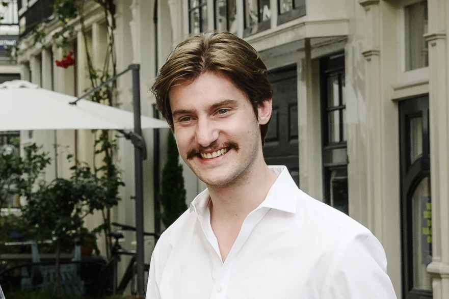
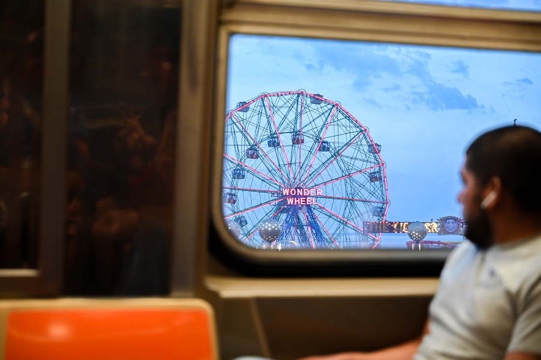
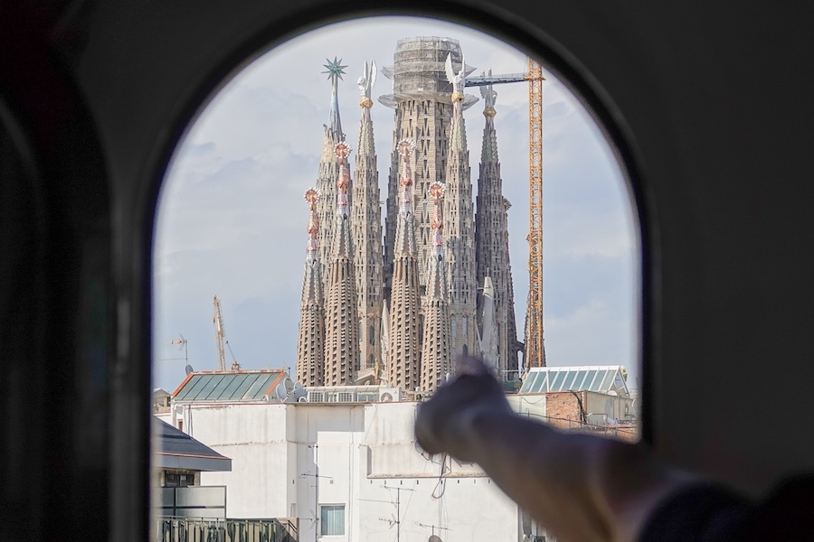

Writer, journalist, photographer.

As the Press founders, so does the Nation
[newsjunkie.net]
Bard Conservatory, Joined by Star Musicians Marcus Roberts and Jason Marsalis, Performs at Eastern Correctional Prison
[The Daily Catch]
Two Local Women Devote Their Lives to Unearthing Bigfoot
[The Daily Catch]
Short fiction, awarded the 2019 National Program Directors' Prize for Content from the Association of Writers and Writing Programs (AWP)
[Furrow]


[New York Press Association, 2025]
[New York Press Association, 2024]
[New York News Publishers Association, 2024]
[UCLA, 2023]
[Master of Fine Arts in Writing, Fiction, Expected Graduation May 2028]
[Bachelor of Art in English, Cum Laude, Graduated June 2023]